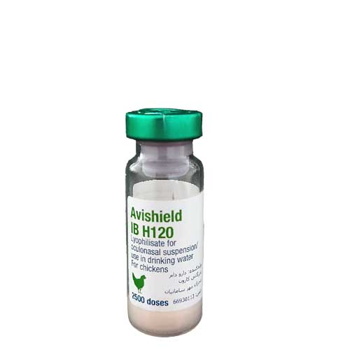

واکسن لیوفیلیزه برونشیت عفونی پرندگان، سویه H-۱۲۰ سروتیپ ماساچوست، دکرا
📝ترکیب:
EID ۵۰ ۱۰ ۳.۵-۱۰۴.۵ ویروس زنده تخفیف حدت یافته برونشیت عفونی پرندگان، سویه H-۱۲۰ ، سروتیپ ماساچوست می باشد.
📝موارد مصرف:
برای ایجاد ایمنی فعال جهت پیشگیری از مرگ و میر و علائم بالینی بیماری برونشیت عفونی در ماکیان
موارد منع مصرف و تداخلات دارویی:
در پرندگان بیمار استفاده نکنید.
📝عوارض جانبی:
در مطالعات بی خطری آزمایشگاهی ۳ تا ۱۰روز پس از واکسیناسیون، اختلالات تنفسی زودگذر نظیر صداهای غیرطبیعی نای مشاهده شدند که خودبخود برطرف شده و نیاز به درمان نداشتند. در صورت وجود هر اثر جدی یا اثراتی که در این راهنما اشاره نشده باشد، به دامپزشک اطلاع دهید
📝گونه های هدف:
ماکیان
📝نحوه تجویز و میزان:
واکسن می تواند به سه روش به کار رود. قطره چشمی-بینی، آشامیدنی و اسپری. روش کاربرد واکسن به وضعیت اپیدمیولوژی، گروه سنی و تعداد پرندگان بستگی دارد. این واکسن را می توان به صورت اسپری با قطرات درشت و یا با قطره چشمی_بینی در جوجه های یک روزه و با سن بالاتر تجویز کرد. زمانی که جوجه ها از سیستم آبخوری به خوبی آب می نوشند، می توان واکسن را به صورت آشامیدنی به کار برد. در مواردی که تعداد پرندگان، بینابین دز استاندارد است، از دز بالاتر استفاده شود. در شرایط اپیدمی نامطلوب، تکرار واکسیناسیون با واکسن مشابه، مونووالان و یا کشته ضرورت دارد.
◻️تجویز چشمی- بینی:
مقدار ۱۰۰۰ دز از واکسن را در ۱۰۰ میلی لیتر آب مقطر حل کنید. هر دز از واکسن ۰.۱ میلی لیتر است که برابر با ۲ قطره از محلول می شود (بدون توجه به سن، وزن و نوع پرنده). یک قطره از محلول به داخل چشم و یک قطره به داخل منفذ بینی چکانده شود.
◻️تجویز در آب آشامیدنی:
دز واکسن را بر حسب تعداد پرندگانی که باید واکسینه شوند، در آب تمیز و خنک بدون باقیمانده کلر، ضدعفونی و یا ناخالصی حل کنید. واکسن باید دقیقا قبل از کاربرد حل شود. حجم صحیح آب را برای پرندگانی که باید واکسینه شوند، تخمین بزنید. حجم آب مصرفی بستگی به سن پرنده، نژاد، مدیریت و دما دارد. به منظور تعیین مقدار آبی که واکسن باید در آن حل شود، میزان آب مصرفی طی دو ساعت در روز قبل از واکسیناسیون سنجیده می شود. به عنوان راهنما، برای جوجه های جوانتر (تا سن سه هفتگی)، تعداد پرندگان را در سن پرنده به روز ضرب کنید (بعنوان مثال ۱۰۰۰ عدد پرنده در روز هفتم زندگی ۷ لیتر آب نیاز دارند). واکسن باید در مقداری از آب حل شود که طی ۱.۵ تا ۲.۵ ساعت نوشیده شود (تفاوت سیستم های آبخوری در طیور باید در نظر گرفته شود). برای ایجاد تشنگی، به مدت دو ساعت قبل از تجویز واکسن، آب را قطع کنید (براساس دمای محیط). همیشه مطمئن باشید که به هنگام واکسیناسیون، خوراک در دسترس باشد. پرندگان اگر خوراکی برای خوردن نداشته باشند، آب نمی نوشند. سیستم آبخوری باید تمیز، عاری از باقی مانده کلر، سایر ضدعفونی ها و ناخالصی باشد.
◻️تجویز به روش اسپری:
بدین منظور توصیه می شود که ۱۰۰۰ دز از واکسن در ٣٠٠-١٥٠ میلی لیتر آب مقطر حل شود. تعداد دز واکسن آماده شده، مطابق با تعداد پرندگان در گله باشد. حجم آب مورد استفاده باید به اندازه ای باشد که از توزیع یکنواخت آن در زمان اسپری مطمئن شوید. این روش براساس سن پرنده و سیستم مدیریتی متفاوت خواهد بود. سوسپانسیون آماده شده از واکسن باید به شکل اسپری با ذرات درشت (ترجیحا زمانی که پرندگان در نور کم کنار هم نشسته اند) بر روی تعداد مناسبی از ماکیان از فاصله ۴۰-۳۰ سانتی متر اسپری شود. دستگاه اسپری باید عاری از رسوب، زنگ زدگی و بقایای ضدعفونی کننده باشد و فقط برای واکسیناسیون استفاده شود. به منظور ایجاد ایمنی سریع فعال و یا به هنگام مواجهه مستقیم گله با بیماری، تجویز به روش اسپری توصیه می گردد. در مورد واکسیناسیون جوجه های یک روزه به روش اسپری، بهترین زمان در هچری و یا طی حمل به سالن مرغداری می باشد. توصیه می شود پرندگان با گروه های سنی بالاتر در فضای کوچک تر (در پرورش در بستر) و در موارد نگهداری در قفس، اسپری واکسن دقیقا بر روی قفس پرندگان انجام می شود. ضروری است که قبل از واکسیناسیون، سیستم تهویه خاموش گردد.
📝توصیه های لازم در زمان تجویز:
تمامی پرندگان در گله باید به طور همزمان واکسینه شوند.
📝مدت زمان پرهیز از مصرف:
ندارد
📝هشدار اختصاصی برای هر گونه هدف:
در هر جمعیت از پرندگان، موارد انفرادی وجود دارد که نسبت به واکسیناسیون پاسخ ضعیفی می دهند. پاسخ های ایمنی بستگی به عوامل ارثی، بیماری های تحت بالینی، شرایط فیزیکی، استرس، استفاده همزمان سایر محصولات، نگهداری و استفاده صحیح واکسن دارند. به ویژه مهم است که در دوره پس از واکسیناسیون، پرندگان به طور مناسبی نگهداری و تغذیه شوند. سویه واکسن می تواند در پرندگان غیر واکسینه حساس ظرف حداقل ده روز متعاقب واکسیناسیون منتشر شود. در شرایط اپیدمی نامطلوب،تکرار واکسیناسیون با واکسن مشابه یا کشته ضرورت دارد.
📝شرایط نگهداری:
دور از دسترس و دید کودکان نگه دارید. در دمای یخچال (٨-٢ درجه سانتی گراد) نگهداری و حمل کنید. دور از نور نگه داشته شود. از فریز شدن آن پرهیز کنید. واکسن پس از انقضا تاریخ روی برچسب و کارتن، استفاده نشود. عمر قفسه ای واکسن پس از آماده سازی، سه ساعت می باشد.
📝موارد احتیاط:
تمامی پرندگان در گله باید به طور همزمان واکسینه شوند.
📝احتیاط لازم برای شخص تجویز کننده واکسن:
در زمان حمل و تجویز واکسن باید مراقبت لازم انجام شود. ویروس بیماری نیوکاسل قادر به ایجاد التهاب گذرا و خفیف در ملتحمه می باشد. در زمان کاربرد این محصول باید از ماسک و محافظ چشم، استفاده شود. پس از واکسیناسیون دست ها را شسته و ضدعفونی کنید.
📝کارخانه سازنده:
جنرا (گروه دکرا)
📝وارد کننده:
دارو دام بازرگانی کارون/ تاجران مهر سامانیان